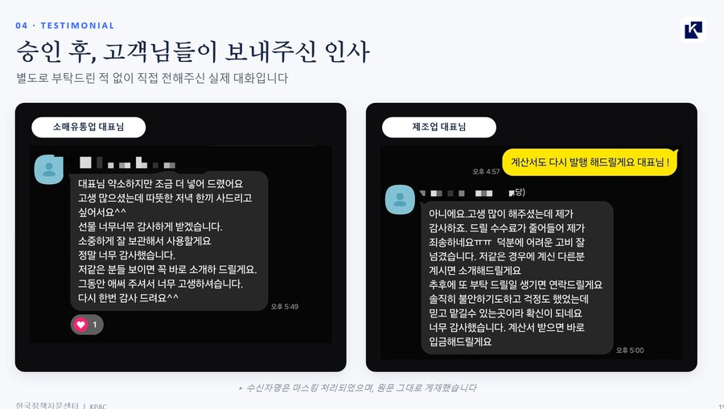
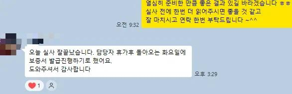
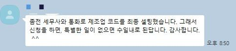
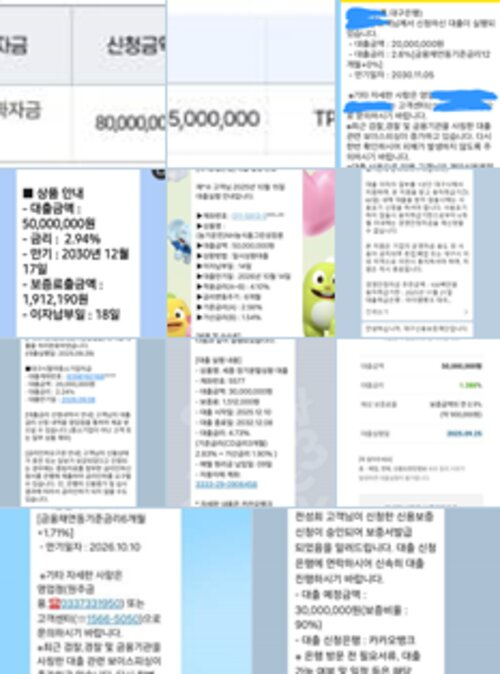
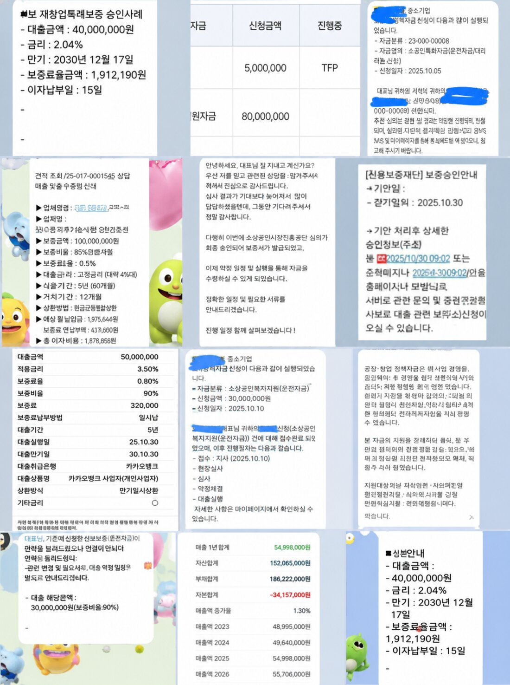
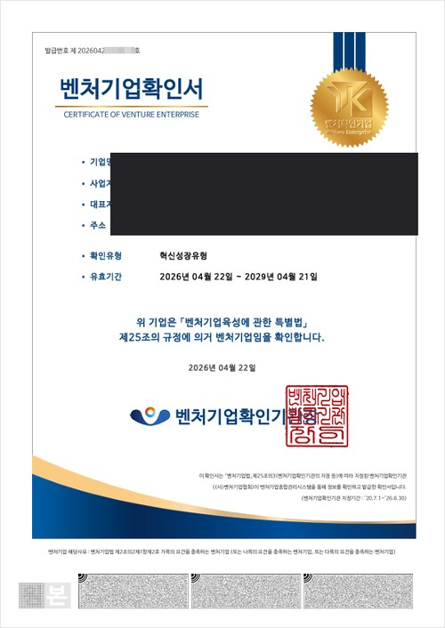
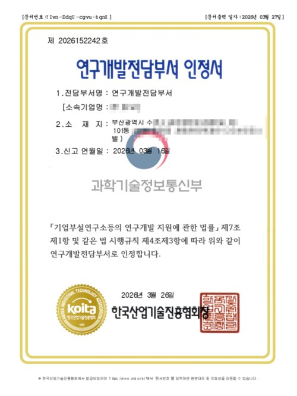
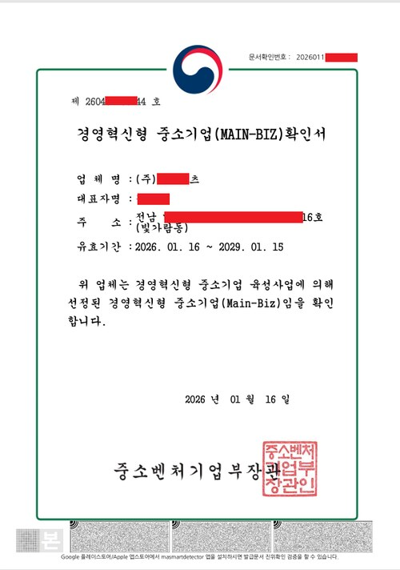

고객 정보 보호를 위해 사명·인명은 비공개로 처리하며, 진행 방식과 결과 중심으로 정리했습니다.
심각한 자본잠식으로 일반 대출이 사실상 불가능했던 제조업체. 재무제표를 전면 재분석해 부채를 매출 연동 항목으로 재구성하고, 기술평가보증 경로로 자금 조달 전략을 새로 설계했습니다.
일시적 매출 급락 후 회복세로 전홖된 개인사업자. 매출 하락을 특수 상황으로 명확히 소명하고, 최근 회복 추세를 근거로 보증 한도 증액을 신청해 필요 자금을 추가로 확보했습니다.
대표자 가수금 비중이 높아 재무 건전성 지표가 취약했던 기업. 가수금의 자본금 전환을 제안해 자본잠식 리스크를 해소하고, 개선된 재무구조로 심사를 통과했습니다.
법인부터 소상공인까지, 실제로 승인받은 기업들의 자료입니다.








모든 이미지는 고객 동의 하에 게재되었으며, 상호명·대표자명·연락처 등 식별 정보는 마스킹 처리했습니다.